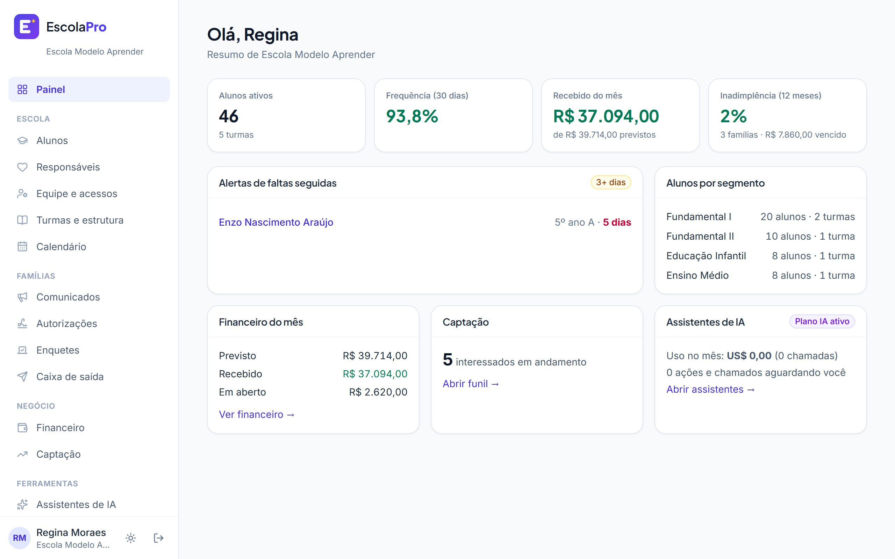
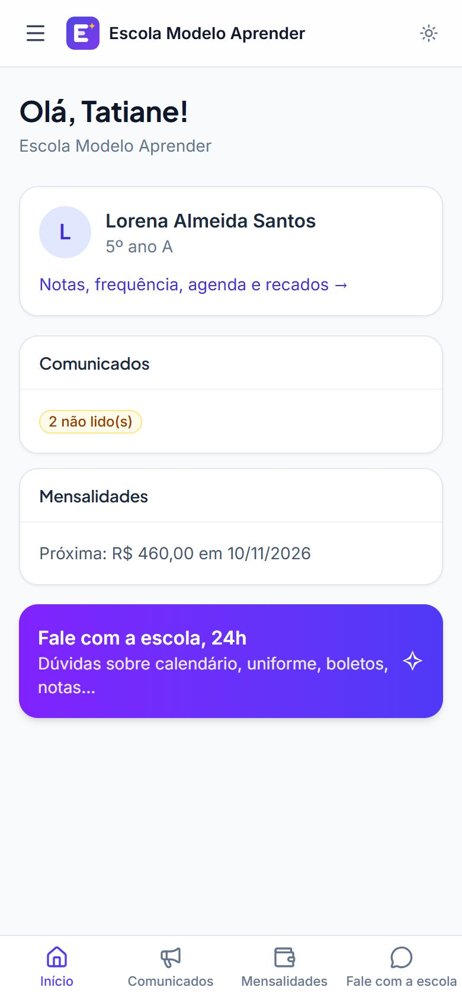
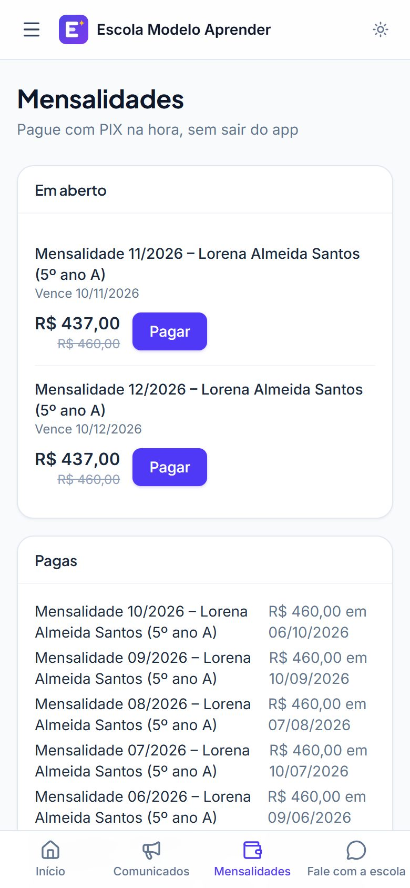
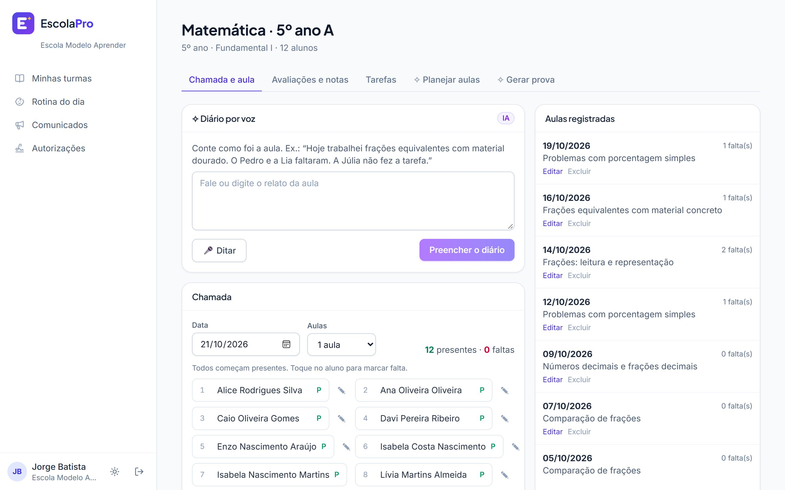
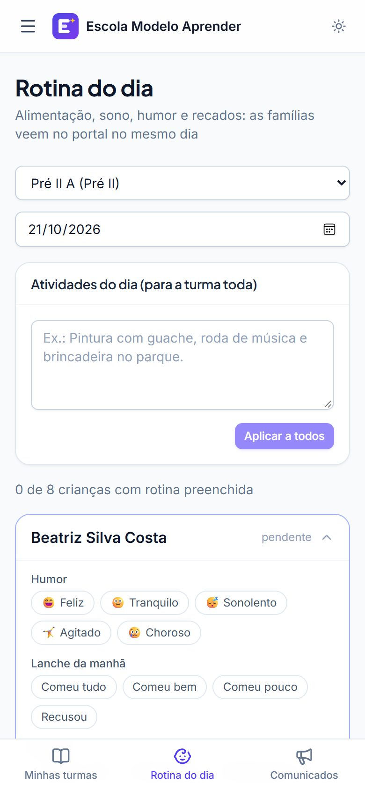

Gestão
O retrato da escola numa tela só.
- Matrículas, turmas e transferências
- Financeiro com previsto, recebido e inadimplência
- Captação de alunos em funil
- Comunicados com confirmação de leitura
- Importação de planilhas com prévia
Matrícula, diário, boletim, mensalidades por PIX e conversa com as famílias no mesmo lugar. Feito para escolas pequenas de educação infantil, fundamental e médio.


Direção, professores e famílias entram pelo mesmo endereço, cada um na sua área, com permissões por perfil.
O retrato da escola numa tela só.
Menos burocracia, mais aula.
A escola no bolso, sem baixar aplicativo.
Os assistentes propõem, a equipe aprova. Você define um limite de gasto por mês e acompanha tudo no painel.
Responde às famílias no WhatsApp e no portal com base no regimento, no calendário e nas regras da escola. Quando não sabe, chama a equipe.
Sugere sequências de aulas ligadas às habilidades da BNCC da série e do componente. O professor ajusta e salva.
O professor fala o que aconteceu na aula e o registro sai organizado: conteúdo, ocorrências e recados.
Gera provas com gabarito a partir do conteúdo dado e rascunhos de pareceres descritivos a partir das observações.
Pergunte em português: “quais turmas têm mais faltas?” ou “quanto entra este mês?”, e receba a resposta com os números da escola.
Propõe parcelamentos para famílias em atraso dentro dos limites que a escola definiu. Nada é enviado sem aprovação.
Os contratos geram as cobranças do ano. A família recebe o lembrete no WhatsApp, paga por PIX, boleto ou cartão, e a baixa acontece sozinha.

Chamada, conteúdo, notas e tarefas na mesma tela, pensada para o celular. A média de cada período e a situação final saem sozinhas, com as regras da sua escola.

A professora registra a rotina de cada criança em poucos toques, e a família vê no mesmo dia.

Todos os recursos de gestão, professores e famílias em todos os planos. A diferença é o número de alunos.
Para escolas de bairro e educação infantil
até 150 alunos
Começar teste grátisInfantil, fundamental e médio na mesma escola
até 400 alunos
Começar teste grátisEscolas maiores e pequenas redes com várias unidades
até 1.000 alunos
Começar teste grátisNão. O EscolaPro funciona no navegador do computador e do celular. Famílias e professores entram com e-mail ou celular, sem baixar aplicativo.
Sim. Você envia a planilha em CSV (salva direto do Excel ou do Google Planilhas), o sistema reconhece as colunas, mostra uma prévia e reaproveita quem já está cadastrado, sem duplicar.
A escola conecta o próprio número. Lembretes de mensalidade, comunicados e autorizações saem por ele, e as famílias podem conversar com a secretaria virtual pelo mesmo número.
Se quiser, no cadastro abrimos uma conta Asaas no nome da escola. As famílias pagam por PIX, boleto ou cartão e o dinheiro cai direto nessa conta, com baixa automática no EscolaPro. Quem preferir pode continuar recebendo como hoje e registrar os pagamentos manualmente.
Não. Os assistentes de IA são um adicional. Dá para ligar e desligar quando quiser, e definir um limite de gasto por mês.
Sim. Além das séries com nota, o EscolaPro tem rotina diária, pareceres descritivos e autorizações digitais, pensados para a educação infantil.
A escola é a controladora dos dados e o EscolaPro trata apenas o necessário para o serviço. Os acessos são por perfil, as ações ficam registradas e os dados de cada escola são isolados no banco.
Comece hoje e veja a sua escola funcionando no EscolaPro ainda nesta semana.
O cadastro online abre em breve. Para participar do grupo de escolas pioneiras, fale com a SF Soluções Tecnológicas.